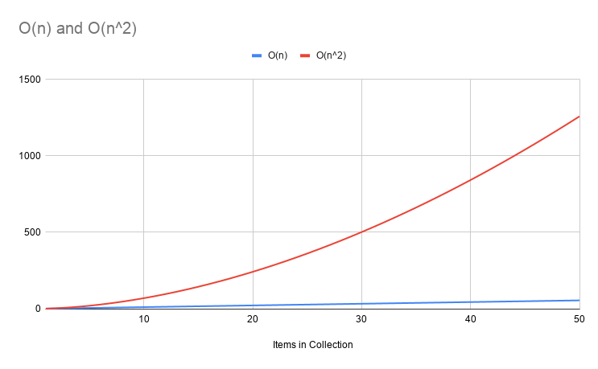
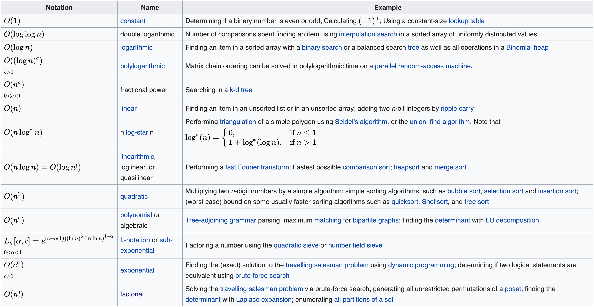

# INFO 450 Spring 2019 --- # Week 9 - Mar 26, 2020 --- # Data Structure Vector Queues Stacks --- # Vector * Linear list of objects/values. * Size of the list is unknown, vs an array of a fixed size. --- # Queue Standing in line at a roller coaster. First in, first out (FIFO) ```c++ #include <iostream> #include <vector> using namespace std; class queue{ private: vector<int> q; public: queue(); ~queue(); void enqueue(int i); int dequeue(); void print(); }; queue::queue() { cout << "Queue initialized." << endl; } queue::~queue(){ cout << "Queue Destroyed." << endl; } ``` --- ```c++ void queue::enqueue(int i){ q.push_back(i); print(); } int queue::dequeue(){ int retval = -1; if (q.size()){ retval = q.at(0); q.erase(q.begin() + 0); } print(); return retval; } void queue::print(){ for (int i = 0;i < q.size();i++){ printf ("[ %02d:%02d], ", i, q[i] ); } cout << endl; } int main() { queue my_queue; cout << my_queue.dequeue() << endl; for (int x = 0;x< 20;x++){ my_queue.enqueue(x); } for (int x = 0;x< 20;x++){ for (int y = 0; y < x;y++){ cout << "----------"; } my_queue.dequeue(); } cout << endl; } ``` --- # Stack * Coins in the car coin slot holder. * Text editor, undo function --- ```c++ #include <iostream> #include <vector> using namespace std; class stack{ private: vector<int> q; public: stack(); ~stack(); void push(int i); int pop(); void print(); }; stack::stack() { cout << "Stack initialized." << endl; } stack::~stack(){ cout << "Stack Destroyed." << endl; } ``` --- ```c++ void stack::push(int i){ q.push_back(i); print(); } int stack::pop(){ int retval = -1; if (q.size()){ retval = q.back(); q.pop_back(); } print(); return retval; } void stack::print(){ for (int i = 0;i < q.size();i++){ printf ("[ %02d:%02d], ", i, q[i] ); } cout << endl; } int main() { stack my_stack; for (int x = 0;x< 20;x++){ my_stack.push(x); } for (int x = 0;x< 20;x++){ my_stack.pop(); } cout << endl; } ``` --- # Big O Complexity of an algorithm We use Big-O notation to asymptotically bound the growth of a running time to within constant factors above and below. Sometimes we want to bound from only above. Asymptotic: so defined that their ratio approaches unity as the independent variable approaches a limit or infinity. (CHF: I liked this one the best) What the heck does this mean? In programming, we measure the efficiency of an algorithm on a collection of data, in relation to the number of items in the collection. --- # Example Consider a sorting algorithm on an array: ```c++ int[] my_numbers = [5,1,6,3,2]; ``` There are 5 elements in the array. We write a sorting algorithm that puts them in the correct order, and it takes 5 units of time. (computers are fast, so this could be 5 \* 100 nanoseconds, 5 \* 1 second, whatever. That is why we talk about "units of time". --- # Now what? ```c++ int[] my_numbers = [5,1,6,3,2,8,3,7,8,2]; ``` Now we are up to 10 items in our array, or double the number of items. We measure the efficiency of our algorithm by the units of time, or set of operations, that get executed dependant on the number of items in the array. In this case, if the 10 elements take 10 units of time, then we know our algorithm has a linear relationship to the number of elements. This is labeled as O(n). Where O is the notation of complexity, and <strong>n</strong> represents the linear relationship. This is similar to plotting x=y on a graph. --- # Can it be worse? Using the same 10 items in our array, if we plot the time to sort the algorith, and we see an exponential relationship, then we have a problem. The Red line indicates O(n<sup>2</sup>)  --- # List of Big O Complexities  Source: https://en.wikipedia.org/wiki/Big_O_notation --- # Sorting * Bubble Sort * Selection Sort * Merge Sort --- # Bubble Sort (code) ```c++ #include <iostream> #include <vector> #include <cstdlib> using namespace std; void bubble_sort(vector<int> *v_ptr); int main(){ vector<int> my_vector; // Create vector for 'string's for (int x = 0;x < 10;x++){ my_vector.push_back(rand() % 100); } for (int i = 0; i < my_vector.size(); i++){ cout << my_vector[i] << " - "; } cout << endl; bubble_sort(&my_vector); for (int i = 0; i < my_vector.size(); i++){ cout << my_vector[i] << " - "; } cout << endl; } ``` --- # Bubble Sort (Code) ```c++ void bubble_sort(vector<int> *v_ptr){ //Get the size of the vector int length = v_ptr->size(); //Loop the vector from 0 to TWO less than the length for (int i = 0;i < length - 1;i++){ // Little tricky, but you'll see, we effectively loop and swap // from the bottom to the top, 'shoving' the smallest number up for (int j = 0;j < length - i - 1;j++){ if (v_ptr->at(j) > v_ptr->at(j+1)){ int temp = v_ptr->at(j); v_ptr->at(j) = v_ptr->at(j+1); v_ptr->at(j+1) = temp; } } } } ``` --- # Bubble Sort O(n^2) <a href="https://www.youtube.com/watch?v=nmhjrI-aW5o" target="_blank">Video</a> <a href='bubble.cpp' target="_blank">Bubble Sort</a> <a href="https://en.wikipedia.org/wiki/Bubble_sort" target="_blank">Wikipedia: Bubble Sort</a> --- # Selection Sort (Code) ```c++ #include <iostream> #include <vector> #include <cstdlib> using namespace std; void selection_sort(vector<int> *v_ptr); int main(){ vector<int> my_vector; // Create vector for 'string's for (int x = 0;x < 10;x++){ my_vector.push_back(rand() % 100); } for (int i = 0; i < my_vector.size(); i++){ cout << my_vector[i] << " - "; } cout << endl; selection_sort(&my_vector); for (int i = 0; i < my_vector.size(); i++){ cout << my_vector[i] << " - "; } cout << endl; } ``` --- ```c++ void selection_sort(vector<int> *v_ptr){ //Get the size of the vector unsigned int length = v_ptr->size(); //Begin a loop starting from the beginning for (unsigned int big_loop = 0;big_loop < length;big_loop++){ // Starting at the index number from the outter loop, // Let's find the 'smallest' number in the remaining numbers int smallest_index = big_loop; for (unsigned int inner_loop = big_loop;inner_loop < length;inner_loop++){ // cout << "Moving to inner " << inner_loop << endl; if (v_ptr->at(inner_loop) < v_ptr->at(smallest_index)){ smallest_index = inner_loop; } } //Once we find the smallest number, we 'move' it to the beginning (outter loop) int temp = v_ptr->at(big_loop); v_ptr->at(big_loop) = v_ptr->at(smallest_index); v_ptr->at(smallest_index) = temp; } } ``` ```bash $ g++ selection.cpp $ ./a.out 7 - 49 - 73 - 58 - 30 - 72 - 44 - 78 - 23 - 9 - 7 - 9 - 23 - 30 - 44 - 49 - 58 - 72 - 73 - 78 - ``` --- # Selection Sort O(n^2) <a href="https://youtu.be/xWBP4lzkoyM" target="_blank">Video</a> <a href="selection.cpp" target="_blank">Selection Sort</a> <a href="https://en.wikipedia.org/wiki/Selection_sort">Wikipedia: Selection Sort</a> --- # Merge Sort Divide and Conquer O(n log n) Better than O(n^2) <a href="https://www.youtube.com/watch?v=JSceec-wEyw" target="_blank">Video</a> <a href="https://en.wikipedia.org/wiki/Merge_sort">Wikipedia: Merge Sort</a> <strong>We will cover this NEXT WEEK</strong> --- ---